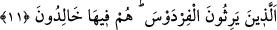
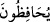
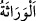

namaz kılsalar da birinci saf ehlidirler.”[67] Nitekim Hâlisatü’l-hakâik’de böyle
geçmektedir.
“ (devam ederler/muhâfaza ederler)” lafzı, namaz yenilendiği ve tekrar tekrar
geldiği için kullanılmıştır. Namazın çoğul yapılmasının da sırrı budur. Burada tekrar
yoktur. Çünkü namazda huşû, namaza devamdan/muhâfazadan başkadır. Bu iki hususun
birbirinden ayrı zikredilmesi, her birinin müstakil fazîletler olduğunu bildirmek içindir.
Kâşifî der ki: “Bu âyetin başlangıcında ve sonunda namazın mü’minlerin felâhına
sebep olduğu şeklindeki vasıflarla zikredilmiş olması, namazın değer ve kıymetinin
yüceliğine işârettir.”
10. İşte, asıl bunlar vâris olacaklardır;
“İşte, asıl bunlar” zikredilen bu yüce vasıfları taşıyan, bu beş sıfatı kendilerinde
toplayan mü’minler “vâris olacaklardır” yâni rağbet edilen değerli mallara ve
hazînelere vâris olan başkaları değil, bunlar “vâris” diye isimlendirilmeyi hak eden
kimselerdir.
“ Hiç bir akid ve akid yerine geçecek bir şey olmaksızın başkasından sana bir
malın intikal etmesidir. Ölen kimseden intikal eden şeye bu isim verilmiş, miras
bırakılan mala “mîrâs” denilmiştir.
11. (Evet) Firdevs’e vâris olan bu kimseler, orada ebedî kalıcıdırlar.
“Firdevs’e vâris olan bu kimseler, orada ebedî kalıcıdırlar.” Bu âyet, şânını
yüceltmek ve yerini yükseltmek için onların vâris oldukları şeyi açıklamakta, mutlak
olarak zikredildikten sonra vâris olmayı kayıtlamakta ve mübhem olarak belirtildikten
sonra onu tefsir etmektedir. Bu, kerim olan vaadin gereği olarak onların amelleri
sebebiyle Firdevs’i hak etmeleri için bir istiâredir. Bunda da mübâlağa vardır. Çünkü
verâset, bir mülke sahip olmanın en güçlü sebebidir. Verâsette red, fesih, ikale[68] ve
nakz (iptal) yoktur.
“orada” yâni Firdevs’te “ebedî kalıcıdırlar.” Ondan çıkmazlar ve ölmezler.
“Firdevs” kelimesi cennetin veya cennetin yüksek tabakalarının ismi olduğu için
müennestir. Firdevs, türlü meyveleri kendisinde toplayan bahçe demektir. Rivayet edilir
ki Allah Teâlâ Firdevs cennetini bir altın ve bir gümüş tuğladan bina etti. Tuğlaların
arasına ziyade hoş kokulu misk yerleştirdi. İçine en güzel meyve ve en güzel kokulu